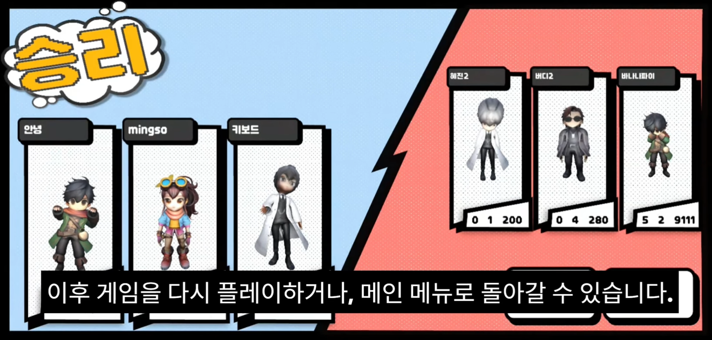

IMPLEMENTATION
Chaos의 물리 파편을 직접 제어해 역행을 구현
Geometry Collection의 파편 상태를 저장하고, 복원 시 각 Fragment의 현재 위치와 원래 위치를 보간하여 역행 애니메이션을 구현했습니다.
TEAM PROJECT · CLIENT PROGRAMMER
시간 조작 능력을 활용해 전투하는 3vs3 멀티플레이 게임

MY CONTRIBUTIONS
클라이언트 프로그래머로 참여하여 Gameplay, UI, Rendering을 중심으로 기능을 구현했습니다.
Chaos 기반 파괴 및 시간 역행 엄폐물
SceneCapture 기반 3D Character Preview
게임 이벤트 기반 단계 진행
공통 Projectile 로직 설계
그 외 게임 내 UI, Skill Indicator, Audio, Practice Mode 등의 클라이언트 기능을 담당했습니다.
01 · GAMEPLAY / PHYSICS
공격에 의해 파괴되고, 시간 역행 스킬의 영향을 받으면 흩어진 파편이 기존 위치로 돌아와 복원되는 엄폐물입니다.
파괴 전 Fragment Transform 저장
Chaos Geometry Collection 파괴
Lerp / Slerp 기반 Fragment 복원
정상 상태의 엄폐물로 복구
IMPLEMENTATION
Geometry Collection의 파편 상태를 저장하고, 복원 시 각 Fragment의 현재 위치와 원래 위치를 보간하여 역행 애니메이션을 구현했습니다.
TECHNICAL DECISION
초기에는 파괴 장면을 Cache로 기록해 역재생하는 방식도 검토했습니다. 모바일 환경에서의 메모리 부담과 프로젝트 요구사항을 고려해 Chaos 물리 상태를 직접 제어하는 방식으로 변경했습니다.
PROBLEM SOLVING · MULTIPLAYER
Fragment별 위치를 지속적으로 서버에서 판정하던 초기 방식에서 네트워크 트래픽이 과도하게 증가하는 문제가 발생했습니다.
파편 수가 증가하면서 서버 처리 및 네트워크 트래픽이 과도하게 증가했습니다.
서버 및 기획 담당자와 논의하여 개별 파편의 정밀 충돌 대신 비산 방향을 기준으로 DamageVolume을 생성하도록 변경했습니다.
개별 Fragment의 정확한 충돌보다 파편이 날아가는 방향에 대한 위험 영역이 게임플레이상 중요하다고 판단하여 선택한 방식입니다.
02 · RENDERING / UI
결과 화면에서 최대 6명의 캐릭터를 3D Preview 형태로 표시하는 시스템을 구현했습니다.

최대 6명의 플레이어 캐릭터를 3D Preview 형태로 표시한 Battle Result 화면
IMPLEMENTATION
플레이어별 Character Preview Actor를 생성하고 각각의 SceneCapture 결과를 RenderTarget에 출력한 뒤, Dynamic Material을 통해 UMG Image에 표시했습니다.
PROBLEM SOLVING
단순 SceneCapture 설정만으로 원하는 캐릭터 배경 처리가 되지 않아 Custom Stencil과 Post Process 기반 렌더링 처리를 적용했습니다.
03 · GAMEPLAY FLOW
Trigger, Breakable Actor, NPC 등 게임에서 발생하는 이벤트를 받아 Tutorial 상태가 순차적으로 변경되는 구조로 구현했습니다.
EVENT-DRIVEN
Trigger 진입, Breakable Actor 파괴 및 복원, Tutorial Enemy 사망 등의 이벤트를 받아 다음 Tutorial 단계로 진행하도록 구성했습니다.
DEBUGGING
레벨 전환 과정에서 발생하던 크래시를 Debugger로 추적하고, Timer Callback에서 TWeakObjectPtr로 객체 유효성을 확인하며 TimerHandle을 관리하도록 관련 코드를 보완했습니다.
04 · C++ DESIGN
여러 Projectile에서 반복되는 충돌, 데미지, 사거리 및 서버 판정 등의 공통 로직을 Base Class에 구현했습니다.
본인이 구현한 AWTProjectile Base를 기반으로 다른 클라이언트 프로그래머가 6종의 파생 Projectile을 구현했습니다. 공통 기능을 Base에 두어 반복 구현을 줄이고, 각 Projectile은 고유 동작 구현에 집중할 수 있도록 구성했습니다.
ADDITIONAL WORK
핵심 기능 외에도 게임을 완성하는 데 필요한 UI, Audio, Practice Mode 등의 클라이언트 기능을 담당했습니다.
게임 내 UI 및 Skill Indicator 구현
Level별 BGM 관리 및 Local Player UI Sound 처리
캐릭터 변경, Pawn Spawn / Possess 및 연습용 Enemy 구성